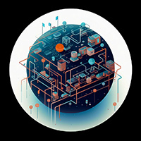

Scholarly Stanzas

Computer-Mediated
Crisis
Development
Educational
Entertainment
Environmental
Gender
Group
Health
Intercultural
Intergroup
International
Interpersonal
Intrapersonal
Language
Mass
Media Studies
New Media
Nonverbal
Organizational
Persuasion
Political
Public Relations
Related Areas
Rhetoric
Risk
Science
Semiotics
Visual
Cognitive Absorption
Cyberbullying Theory
Distributed Cognition
Hyperpersonal Model
Information Theory
Internet Addiction
Media Synchronicity
Network Theory
Networked Individualism
Online Communities
Online Competence
Online Disinhibition Effect
Online Flow
Privacy Calculus
Reduced Social Cues
Social Information Processing
Social Presence
Strength of Weak Ties
Technology Acceptance
Crisis Informatics
Digital Crisis
Frame Analysis
Image Repair
Mediation Theory
Protective Action Decision
Resilience
Resilience Theory
Situational Crisis
Empowerment Theory
Activity Theory
Cognition Multimedia Learning
Cognitive Flexibility
Cognitive Load
Connectivism Learning
Critical Literacy
Dual Coding
Situated Cognition
Social Learning
Parasocial Interaction
Adaptive Management
Attention Restoration
Climate Change
Cultural Studies Environmental
Cultural Theory of Risk
Ecocriticism and Media
Energy Communication
Environmental Discourse
Environmental Justice
Environmental Risk
Precautionary Principle
Public Sphere Environmental
Bechdel Test
Cyberfeminism
Doing Gender
Female Gaze
Feminist Media
Feminist Rhetoric
Feminist Standpoint
Gender Power
Gender Schema
Hegemonic Masculinity
Intersectionality Theory
Male Gaze
Muted Group
Objectification Theory
Performativity Theory
Poststructural Feminism
Queer Theory
Social Role
Standpoint Theory
Symbolic Annihilation
Groupthink Theory
Social Network
Social Network
Social Norms
Social Power
Behavior Prediction
Cultural Competence in Health
Extended Parallel Process
Health and Social Networks
Health Belief
Health Information Seeking
Persuasive Health Messages
Precaution Adoption Process
Protection Motivation
Risk Model
Risk Perception
Social Ecological
Social Support
Basic Human Values
Communication Accommodation
Communicative Competence
Constructivism
Cultural Dimensions
Cultural Proximity
Cultural Synergy
Culture Shock and Adaptation
Dialectical Approach to Intercultural
Distributive Negotiation
Ethnocentrism
Ethnography of Communication
High and Low Context
Hybridity Theory
Integrative Negotiation
Intercultural Apprehension
Intercultural Competence
Intercultural Competence
Intercultural Rhetoric
Intercultural Sensitivity
Intercultural Transformation
Interlanguage Pragmatics
National Culture Differences
Theory of Identity
Third Culture Building
Transformative Mediation
Uncertainty Avoidance
Worldview Theory
Common Identity and Common Bond
Contextual Model
Dual Concern
Implicit Bias
Optimal Distinctiveness
Realistic Conflict
Relative Deprivation
Social Identity
Stereotype Content
Cultural Globalization
Cultural Imperialism
Dependency Theory
Digital Divide Theory International
Globalization Theory
Glocalization Theory
International News Flow
Network Society Theory International
Public Diplomacy
Soft Power
Uses and Gratifications International
World Systems
Affect Theory of Social Exchange
Affection Exchange
Apology Theory
Attachment Theory
Attribution Theory
Communication Privacy Management
Conflict Coaching
Conflict Escalation
Cooperative and Competitive Conflict
Emotional Contagion
Empathy Theory
Equity Theory
Expectancy Violations
Facework Theory
Forgiveness and Reconciliation
Identity Management
Interaction Adaptation
Interdependence Theory
Interpersonal Deception
Interpersonal Influence
Intersubjectivity Theory
Negotiation Theory
Nonviolent Theory
Politeness Theory
Privacy Management
Rapport Management
Relational Dialectics
Relational Maintenance Strategies
Relationship Development Stages
Social Cognitive
Social Exchange
Social Identity Model of Deindividuation Effects
Social Penetration
Symbolic Interactionism
Turning Point
Uncertainty Management
Uncertainty Reduction
Weak Ties
Affective Forecasting
Cognitive Appraisal
Cognitive Behavioral
Construal Level
Emotion Regulation
Emotional Intelligence
Inner Speech
Learned Helplessness
Mental Noise
Mindfulness Theory
Personal Construct
Rumination Theory
Social Comparison
The Spotlight Effect
Theory of Mind
Accommodation Theory
Bilingualism and Social Interaction
Conversation Analysis
Critical Discourse
Critical Language Awareness
Discourse and Identity
Discursive Psychology
Ethnomethodology
Goffman's Interaction Order
Grice's Cooperative Principle
Grounded Theory
Linguistic Anthropology
Linguistic Landscape
Membership Categorization
Metaphor Theory
Multilingualism Social Interaction
Relational Framing
Relevance Theory
Second Language Social Interaction
Small Stories Approach
Speech Act
Speech Codes
Speech Community
Translanguaging Theory
Active Audience
Cognitive Mediation
Cultivation Analysis
Cultivation Differential
Cultivation Theory
Cultural Logic of Convergence
Gatekeeping Theory
Hierarchy of Influences
Hypodermic Needle
Information Seeking
Knowledge Gap
Limited Effects
Mainstreaming Theory
Media Richness
Minimal Effects Hypothesis
Multistep Flow
Priming Theory
Reception Theory
Resonance Theory
Selective Exposure
Selective Perception
Selective Retention
Spiral of Silence
Uses and Dependency
Uses and Gratifications
Attention Economy
Convergence Culture
Critical Theory of
Digital Inequality
Digital Literacy
Domestication Theory
Fandom Theory
Film Theory and
Filter Bubble
Hegemony Theory
Hostile Media Phenomenon
Media Bias
Media Convergence
Media Dependency
Media Ecology
Media Framing
Media Hegemony
Media Imperialism
Media Literacy
Media Logic
Media Naturalness
Media Performance
Media Production
Media System Dependency
Mediated Action
Mediated Discourse
Mediatization Theory
Network Society
Propaganda Model
Social Constructionism
Technological Determinism
Affordance Theory
Algorithmic Culture
Critical Code
Digital Labor
Hypertext Theory
Mobile Theory
Network Gatekeeping
Participatory Culture
Platform Studies
Web 2.0
Chronemics
Facial Feedback Hypothesis
Haptics
Kinesics
Proxemics
Proxemics
Adaptive Structuration
Boundary Spanning
Bureaucracy Theory
Channel Expansion
Communities of Practice
Contingency Theory
Cultural Approach Organizations
Distributed Leadership
Distributive Justice
Information Management
Information Systems Success
Interactional Justice
Normal Accident
Organizational Assimilation
Organizational Culture
Organizational Ecology
Organizational Identification
Organizational Learning
Procedural Justice
Resource Dependency
Restorative Justice
Sensemaking Theory
Sensemaking Theory
Servant Leadership
Stakeholder Theory
Structuration Theory
Systems Theory
Transactional Leadership
Transformational Leadership
Anchoring Bias
Authority Principle
Availability Heuristic
Bandwagon Effect
Boomerang Effect
Central Peripheral Routes
Cognitive Bias
Cognitive Dissonance
Commitment and Consistency Principle
Confirmation Bias
Congruity Theory
Consistency Theory
Dual Process
Elaboration Likelihood
Fear Appeals
Framing and Reframing
Framing Theory
Halo Effect
Heuristics and Biases
Information Integration
Inoculation Theory
Loss Aversion
Lowball Technique
Mere Exposure Effect
Narrative Persuasion
Psychological Reactance
Reasoned Action
Reciprocity Principle
Reinforcement Theory
Scarcity Principle
Sleeper Effect
Social Influence
Social Influence Technology Adoption
Social Judgment
Social Marketing
Source Credibility
Theory of Planned Behavior
Theory of Reasoned Action
Underdog Effect
Connective Action
Deliberative Democracy
Echo Chamber
Gerrymandering
Grassroots Campaigning
Hostile Media Perception
Integrative Complexity
Issue Ownership
Issue Salience
Microtargeting
Opposition Research
Political Economy of
Political Marketing
Political Socialization
Push Polling
Surrogate Campaigning
Swift Boating
Voter Suppression
Wedge Issue Strategies
Astroturfing
Digital Campaigning
Nation Branding
Public Information
Social Media Campaigning
Diffusion of Innovations
Digital Divide
Dramaturgical Theory
Flow Theory
Game Theory
Hierarchy of Needs
Information Ecology
Information Processing
Mental Models
Positioning Theory
Psychometric Paradigm
Schema Theory
Social Construction of Reality
Social Representation
Argumentation Model
Aristotle's Rhetoric
Cicero's Canons of Rhetoric
Critical Rhetoric
Digital Rhetoric
Dramatism
Fantasy Theme
Genre Theory in Rhetoric
Narrative Analysis
Rhetoric of Science
Rhetorical Criticism
Rhetorical Situation
Integrated Risk Management
Social Amplification of Risk
Ethics of Science
Public Understanding of Science
Social Construction of Technology
Social Construction Scientific Knowledge
Social Shaping of Technology
Intertextuality Theory
Pictorial Semiotics
Semiology of Graphics
Color Theory
Data Visualization
Graphic Design
Information Visualization
Multimodality Theory
Visual Rhetoric
Computer-Mediated
Crisis
Development
Educational
Entertainment
Environmental
Gender
Group
Health
Intercultural
Intergroup
International
Interpersonal
Intrapersonal
Language
Mass
Media Studies
New Media
Nonverbal
Organizational
Persuasion
Political
Public Relations
Related Areas
Rhetoric
Risk
Science
Semiotics
Visual
Cognitive Absorption
Cyberbullying Theory
Distributed Cognition
Hyperpersonal Model
Information Theory
Internet Addiction
Media Synchronicity
Network Theory
Networked Individualism
Online Communities
Online Competence
Online Disinhibition
Effect
Online Flow
Privacy Calculus
Reduced Social Cues
Social Information
Processing
Social Presence
Strength of Weak Ties
Technology Acceptance
Crisis Informatics
Digital Crisis
Frame Analysis
Image Repair
Mediation Theory
Protective Action
Decision
Resilience
Resilience Theory
Situational Crisis
Empowerment Theory
Activity Theory
Cognition Multimedia
Learning
Cognitive Flexibility
Cognitive Load
Connectivism Learning
Critical Literacy
Dual Coding
Situated Cognition
Social Learning
Parasocial Interaction
Adaptive Management
Attention Restoration
Climate Change
Cultural Studies
Environmental
Cultural Theory of Risk
Ecocriticism and Media
Energy Communication
Environmental Discourse
Environmental Justice
Environmental Risk
Precautionary Principle
Public Sphere
Environmental
Bechdel Test
Cyberfeminism
Doing Gender
Female Gaze
Feminist Media
Feminist Rhetoric
Feminist Standpoint
Gender Power
Gender Schema
Hegemonic Masculinity
Intersectionality Theory
Male Gaze
Muted Group
Objectification Theory
Performativity Theory
Poststructural Feminism
Queer Theory
Social Role
Standpoint Theory
Symbolic Annihilation
Groupthink Theory
Social Network
Social Network
Social Norms
Social Power
Behavior Prediction
Cultural Competence in
Health
Extended Parallel Process
Health and Social
Networks
Health Belief
Health Information
Seeking
Persuasive Health
Messages
Precaution Adoption
Process
Protection Motivation
Risk Model
Risk Perception
Social Ecological
Social Support
Basic Human Values
Communication
Accommodation
Communicative Competence
Constructivism
Cultural Dimensions
Cultural Proximity
Cultural Synergy
Culture Shock and
Adaptation
Dialectical Approach to
Intercultural
Distributive Negotiation
Ethnocentrism
Ethnography of
Communication
High and Low Context
Hybridity Theory
Integrative Negotiation
Intercultural
Apprehension
Intercultural Competence
Intercultural Competence
Intercultural Rhetoric
Intercultural Sensitivity
Intercultural
Transformation
Interlanguage Pragmatics
National Culture
Differences
Theory of Identity
Third Culture Building
Transformative Mediation
Uncertainty Avoidance
Worldview Theory
Common Identity and Bond
Common
Contextual Model
Dual Concern
Implicit Bias
Optimal Distinctiveness
Realistic Conflict
Relative Deprivation
Social Identity
Stereotype Content
Cultural Globalization
Cultural Imperialism
Dependency Theory
Digital Divide Theory
International
Globalization Theory
Glocalization Theory
International News Flow
Network Society Theory
International
Public Diplomacy
Soft Power
Uses and Gratifications
International
World Systems
Affect Theory of Social
Exchange
Affection Exchange
Apology Theory
Attachment Theory
Attribution Theory
Communication Privacy
Management
Conflict Coaching
Conflict Escalation
Cooperative and Conflict
Competitive
Emotional Contagion
Empathy Theory
Equity Theory
Expectancy Violations
Facework Theory
Forgiveness and
Reconciliation
Identity Management
Interaction Adaptation
Interdependence Theory
Interpersonal Deception
Interpersonal Influence
Intersubjectivity Theory
Negotiation Theory
Nonviolent Theory
Politeness Theory
Privacy Management
Rapport Management
Relational Dialectics
Relational Maintenance
Strategies
Relationship Development
Stages
Social Cognitive
Social Exchange
Social Identity Model of
Deindividuation Effects
Social Penetration
Symbolic Interactionism
Turning Point
Uncertainty Management
Uncertainty Reduction
Weak Ties
Affective Forecasting
Cognitive Appraisal
Cognitive Behavioral
Construal Level
Emotion Regulation
Emotional Intelligence
Inner Speech
Learned Helplessness
Mental Noise
Mindfulness Theory
Personal Construct
Rumination Theory
Social Comparison
The Spotlight Effect
Theory of Mind
Accommodation Theory
Bilingualism and Social
Interaction
Conversation Analysis
Critical Discourse
Critical Language
Awareness
Discourse and Identity
Discursive Psychology
Ethnomethodology
Goffman's Interaction
Order
Grice's Cooperative
Principle
Grounded Theory
Linguistic Anthropology
Linguistic Landscape
Membership Categorization
Metaphor Theory
Multilingualism Social
Interaction
Relational Framing
Relevance Theory
Second Language Social
Interaction
Small Stories Approach
Speech Act
Speech Codes
Speech Community
Translanguaging Theory
Active Audience
Cognitive Mediation
Cultivation Analysis
Cultivation Differential
Cultivation Theory
Cultural Logic of
Convergence
Gatekeeping Theory
Hierarchy of Influences
Hypodermic Needle
Information Seeking
Knowledge Gap
Limited Effects
Mainstreaming Theory
Media Richness
Minimal Effects
Hypothesis
Multistep Flow
Priming Theory
Reception Theory
Resonance Theory
Selective Exposure
Selective Perception
Selective Retention
Spiral of Silence
Uses and Dependency
Uses and Gratifications
Attention Economy
Convergence Culture
Critical Theory of
Digital Inequality
Digital Literacy
Domestication Theory
Fandom Theory
Film Theory and
Filter Bubble
Hegemony Theory
Hostile Media Phenomenon
Media Bias
Media Convergence
Media Dependency
Media Ecology
Media Framing
Media Hegemony
Media Imperialism
Media Literacy
Media Logic
Media Naturalness
Media Performance
Media Production
Media System Dependency
Mediated Action
Mediated Discourse
Mediatization Theory
Network Society
Propaganda Model
Social Constructionism
Technological Determinism
Affordance Theory
Algorithmic Culture
Critical Code
Digital Labor
Hypertext Theory
Mobile Theory
Network Gatekeeping
Participatory Culture
Platform Studies
Web 2.0
Chronemics
Facial Feedback
Hypothesis
Haptics
Kinesics
Proxemics
Proxemics
Adaptive Structuration
Boundary Spanning
Bureaucracy Theory
Channel Expansion
Communities of Practice
Contingency Theory
Cultural Approach
Organizations
Distributed Leadership
Distributive Justice
Information Management
Information Systems
Success
Interactional Justice
Normal Accident
Organizational
Assimilation
Organizational Culture
Organizational Ecology
Organizational
Identification
Organizational Learning
Procedural Justice
Resource Dependency
Restorative Justice
Sensemaking Theory
Sensemaking Theory
Servant Leadership
Stakeholder Theory
Structuration Theory
Systems Theory
Transactional Leadership
Transformational
Leadership
Anchoring Bias
Authority Principle
Availability Heuristic
Bandwagon Effect
Boomerang Effect
Central Peripheral Routes
Cognitive Bias
Cognitive Dissonance
Commitment and Principle
Consistency
Confirmation Bias
Congruity Theory
Consistency Theory
Dual Process
Elaboration Likelihood
Fear Appeals
Framing and Reframing
Framing Theory
Halo Effect
Heuristics and Biases
Information Integration
Inoculation Theory
Loss Aversion
Lowball Technique
Mere Exposure Effect
Narrative Persuasion
Psychological Reactance
Reasoned Action
Reciprocity Principle
Reinforcement Theory
Scarcity Principle
Sleeper Effect
Social Influence
Social Influence Adoption
Technology
Social Judgment
Social Marketing
Source Credibility
Theory of Planned
Behavior
Theory of Reasoned Action
Underdog Effect
Connective Action
Deliberative Democracy
Echo Chamber
Gerrymandering
Grassroots Campaigning
Hostile Media Perception
Integrative Complexity
Issue Ownership
Issue Salience
Microtargeting
Opposition Research
Political Economy of
Political Marketing
Political Socialization
Push Polling
Surrogate Campaigning
Swift Boating
Voter Suppression
Wedge Issue Strategies
Astroturfing
Digital Campaigning
Nation Branding
Public Information
Social Media Campaigning
Diffusion of Innovations
Digital Divide
Dramaturgical Theory
Flow Theory
Game Theory
Hierarchy of Needs
Information Ecology
Information Processing
Mental Models
Positioning Theory
Psychometric Paradigm
Schema Theory
Social Construction of
Reality
Social Representation
Argumentation Model
Aristotle's Rhetoric
Cicero's Canons of
Rhetoric
Critical Rhetoric
Digital Rhetoric
Dramatism
Fantasy Theme
Genre Theory in Rhetoric
Narrative Analysis
Rhetoric of Science
Rhetorical Criticism
Rhetorical Situation
Integrated Risk
Management
Social Amplification of
Risk
Ethics of Science
Public Understanding of
Science
Social Construction of
Technology
Social Construction
Scientific Knowledge
Social Shaping of
Technology
Intertextuality Theory
Pictorial Semiotics
Semiology of Graphics
Color Theory
Data Visualization
Graphic Design
Information Visualization
Multimodality Theory
Visual Rhetoric